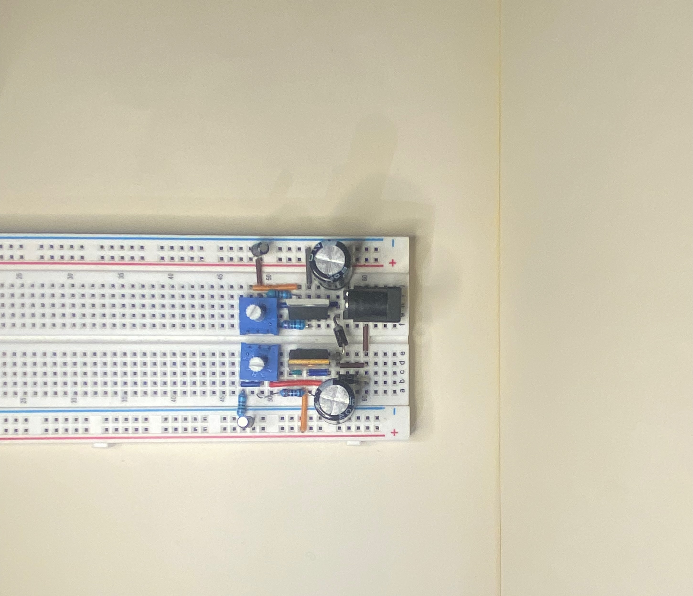

General Purpose Adjustable Bipolar DC Voltage Supply

Adjustable Bipolar DC Voltage Supply Breadboard Setup
Overview
This power supply is designed for delivering variable current while maintaining high
stability. It uses 3-terminal linear voltage regulators and half-wave rectifiers to provide
reliable performance, making it ideal for a variety of electronic projects requiring bipolar
power supplies.
Wiring Diagram
Detailed wiring diagram with pin numbers and component values.
The diagram illustrates the wiring setup for the breadboard, featuring pin numbers and
component values to facilitate easy assembly and testing. The transformer shown as T1
steps down the input AC voltage from 120V AC to 18V RMS (1000 mA capacity).
The transformer provides two AC outputs which will be used to generate both positive
and negative voltage rails.
D1 and D2 are 1N4001 diodes, which act as rectifiers in a half-wave configuration.
D1 handles the positive half-cycles, and D2 handles the negative half-cycles of the AC
signal from the transformer. This setup ensures that the AC signal is converted into
pulsating DC signals for further regulation.
C1 and C2 are 1000 µF electrolytic capacitors they smooth the pulsating DC
signals to produce a more stable DC voltage. They reduce the ripple
voltage before it reaches the regulators.
C3 and C4 are 1 µF capacitors, these capacitors are placed at the output of the LM317 and
LM337 regulators to improve stability and reduce high-frequency noise.
TI recommends that the input terminal be bypassed to ground with a bypass capacitor, optimum
placement is closest to the input terminal of the device and the system GND. TI recommends a
0.1 µF capacitor for high frequency and 10 µF for high capacity thus 1 µF was chosen for a
balance of both.
LM317 is an adjustable positive voltage regulator, it regulates the positive
voltage side of the circuit. It has three pins: IN, OUT, and ADJ (adjustment pin for
controlling the output voltage).
LM337 is the counterpart for the negative rail, an adjustable negative voltage
regulator.
For the positive voltage rail, R1 and R2 create a voltage divider. R1 is a fixed
resistor, while R2 is a 5k potentiometer that adjusts the output voltage. R7, which is in
parallel with R2, fine-tunes the adjustment range of R2. This simnple addition allows finer
control over the output voltage.
For LM337 (negative voltage rail), R4 and R3 create a similar voltage divider with R5 for
finer control.
R6 sets the lower bound for the newgative rail at about -3V.
The final output of this power supply can be fine-tuned to provide adjustable voltages in
the range of approximately +/- 3V to +/- 16V
This project involved developing an event service framework for an autonomous roach. The system,
programmed in C, supports asynchronous event processing and a straightforward implementation of
Hierarchical State Machines (HSMs). The objective of the autonomous bot was to use its onboard
Light Dependent Resistor (LDR) sensors to find out dark areas, mimicking the behavior of a real
cockroach. Once the roach finds darkness, it pauses its search algorithm until one of its side
bump sensors is triggered, simulating a human disturbance. When disturbed, the robot performs a
frantic evasive maneuver until it finds another dark spot to hide. The video demonstrates the
bot hiding under chairs and scurrying away to find another desk or chair to conceal itself
beneath.
Hierarchical State Machine used to manage the movement of the cockroach.
This project involved development and testing of an activity classification system designed to
track rock climbing routes by measuring displacement throughout the route using a 9-DOF IMU
sensor, the BNO055. The sensor's acceleration data was double-integrated to derive the
displacement over time, with a state machine implemented for data collection in Calibration,
Recording, and Waiting states. Calibration mode ensured accuracy by requiring all sensor types
to be
fully calibrated before data recording began. Data was recorded using CoolTerm and analyzed in
MATLAB, where preprocessing included debouncing, bias removal, and applying both low-pass and
high-pass filters to get human movement and eliminate the random spikes from the sensor.
Velocity and displacement were calculated by integrating the acceleration
data, and their visualizations provided insights into the movements captured by the sensor.
Initial trials along each axis produced some measurable error rates, which increased during
real-world climbing due to the complexities of motion and noise sensitivity.
The best results from climbing trials demonstrated
increased error with longer climbs, highlighting the difficulties in filtering noise and
accurately capturing complex movements. While the device showed potential, the results
emphasized the limitations of using cheap IMUs for precise activity tracking in dynamic
environments.
ECE101/L – Intro to linear systems and signals, with lab work.
ECE103/L – Analysis of electrical circuits and components,
includes lab work.
ECE118
– A project-based course on designing and integrating mechanical, electrical, and
computer systems into functional automated systems using sensors and microcontrollers.
ECE121
– Design and use of microcontroller-based systems and interfacing with analog and
digital systems.
ECE141
– Advanced digital design and hardware implementation.
ECE167/L – Use of sensors for temperature, motion, sound, and
light, focusing on digital integration.
ECE171/L – Amplifiers, oscillators, and signal processing with
hands-on lab work.
Computer Science
ECE13 –
C programming with a focus on embedded systems, using the Microchip PIC32
microcontroller.
CSE12 –
Introduction to computer systems, digital logic, and assembly language programming.
CSE16/L
– Study of discrete structures including sets, graphs, and combinatorics applied to
computer science.
CSE20 –
Mathematical foundations of computer science.
CSE30 –
Software development in Python with a focus on object-oriented design.
CSE100/L – Advanced data structures and algorithm design,
includes lab work.